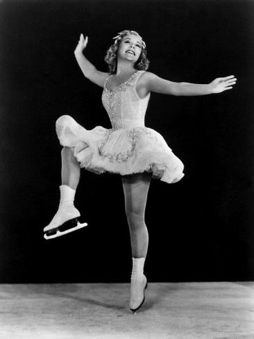

유래와 역사

19세기 중·후반 유럽에서 시작되었다.
1850년 에드워드 부시넬(Edward Bushnell)이 금속제 날을 부착한 스케이트를 개발하였고,
1860년대 중반에 발레 교사인 잭슨 헤인즈(Jackson Haines)가 발레에 기반을 둔 예술적
동작을 고안하면서 현대 피겨스케이팅의 기반이 다져졌다. 1891년 제1회 유럽피겨선수권대회가
열렸고, 1892년 국제스케이팅연맹(ISU)이 결성된 뒤 1896년 러시아 상트페테르부르크에서 제1회
세계피겨선수권대회가 개최되었다.
보수적인 19세기에는 남자 선수만 출전하다가 1902년 세계선수권대회에서
영국의 마지 시어스가 남자 선수들과 겨루어 은메달을 획득하였다.
이를 계기로 국제스케이팅연맹은 남녀 선수가 함께 경쟁하는 것을 금지하고
1906년 여자 싱글 종목을 독립시켰으며, 이때부터 남녀 종목이 따로 열리게 되었다.
올림픽에서는 1908년 영국 런던에서 열린 제4회 하계올림픽 때 첫 선을
보여 남녀 싱글과 혼성 페어 경기를 치렀으며, 1924년 동계올림픽이 창설되면서 대표적
종목으로 자리를 잡게 되었다. 이후 1976년 오스트리아의 인스브루크에서 개최된 제12회
동계올림픽경기대회에서 아이스댄스 종목이 추가되었고, 2014년 러시아의 소치에서 열린
제22회 동계올림픽부터 단체전에 해당하는 팀이벤트 종목이 추가되었다.